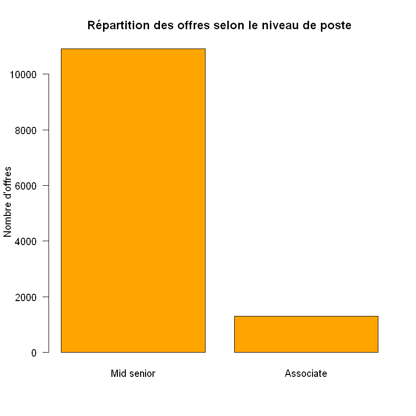
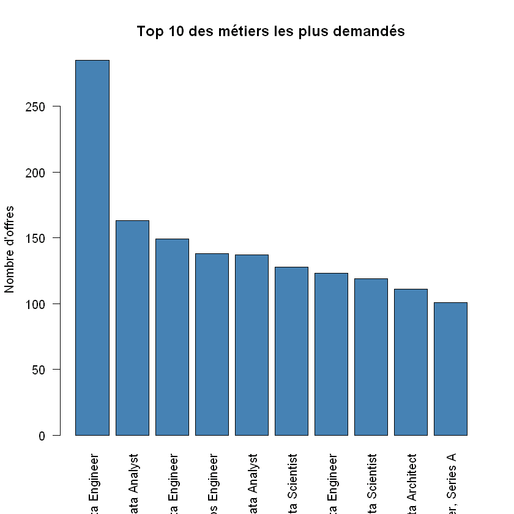
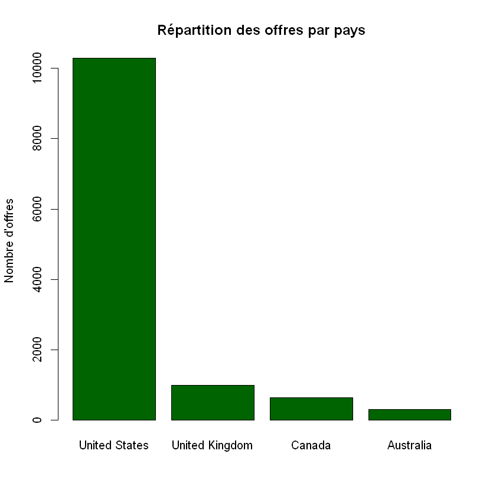

Analyse du marché de l’emploi dans la Data
1 Analyse du marché de l’emploi dans la Data
Ce projet vise à analyser le marché de l’emploi dans le domaine de la Data (Data Science, Data Analysis, Intelligence Artificielle) à partir d’offres d’emploi réelles.
L’analyse repose sur trois datasets : - job_postings.csv : informations générales sur les offres d’emploi - job_skills.csv : compétences associées à chaque offre - job_summary.csv : informations et indicateurs synthétiques
L’objectif est d’identifier les métiers les plus demandés, les compétences clés et de comprendre les tendances générales du marché.
Ce notebook correspond à la phase d’exploration des données.
data_dir <- if (dir.exists('../data/raw')) '../data/raw' else 'data/raw'
if (!dir.exists(data_dir)) stop('data/raw folder not found')
files <- c(
job_postings = 'job_postings.csv',
job_skills = 'job_skills.csv',
job_summary = 'job_summary.csv'
)
read_safe <- function(fname) {
path <- file.path(data_dir, fname)
if (!file.exists(path)) stop(paste('Missing file:', path))
read.csv(path, stringsAsFactors = FALSE)
}
list2env(lapply(files, read_safe), envir = .GlobalEnv)<environment: R_GlobalEnv>1.1 Aperçu général des datasets
Cette étape permet d’avoir une première vue d’ensemble sur les données : - Nombre de lignes et de colonnes - Noms des variables - Structure générale des datasets
Cela aide à comprendre le contenu des fichiers avant d’aller plus loin dans l’analyse.
# Dimensions des datasets
dim(job_postings)
dim(job_skills)
dim(job_summary)
# Noms des colonnes
names(job_postings)
names(job_skills)
names(job_summary)
# Structure des données
str(job_postings)
str(job_skills)
str(job_summary)- 12217
- 15
- 12217
- 2
- 12217
- 2
- ‘job_link’
- ‘last_processed_time’
- ‘last_status’
- ‘got_summary’
- ‘got_ner’
- ‘is_being_worked’
- ‘job_title’
- ‘company’
- ‘job_location’
- ‘first_seen’
- ‘search_city’
- ‘search_country’
- ‘search_position’
- ‘job_level’
- ‘job_type’
- ‘job_link’
- ‘job_skills’
- ‘job_link’
- ‘job_summary’
'data.frame': 12217 obs. of 15 variables:
$ job_link : chr "https://www.linkedin.com/jobs/view/senior-machine-learning-engineer-at-jobs-for-humanity-3804053819" "https://www.linkedin.com/jobs/view/principal-software-engineer-ml-accelerators-at-aurora-3703455068" "https://www.linkedin.com/jobs/view/senior-etl-data-warehouse-specialist-at-adame-services-llc-3765023888" "https://www.linkedin.com/jobs/view/senior-data-warehouse-developer-architect-at-morph-enterprise-3794602483" ...
$ last_processed_time: chr "2024-01-21 08:08:48.031964+00" "2024-01-20 04:02:12.331406+00" "2024-01-21 08:08:31.941595+00" "2024-01-20 15:30:55.796572+00" ...
$ last_status : chr "Finished NER" "Finished NER" "Finished NER" "Finished NER" ...
$ got_summary : chr "t" "t" "t" "t" ...
$ got_ner : chr "t" "t" "t" "t" ...
$ is_being_worked : chr "f" "f" "f" "f" ...
$ job_title : chr "Senior Machine Learning Engineer" "Principal Software Engineer, ML Accelerators" "Senior ETL Data Warehouse Specialist" "Senior Data Warehouse Developer / Architect" ...
$ company : chr "Jobs for Humanity" "Aurora" "Adame Services LLC" "Morph Enterprise" ...
$ job_location : chr "New Haven, CT" "San Francisco, CA" "New York, NY" "Harrisburg, PA" ...
$ first_seen : chr "2024-01-14" "2024-01-14" "2024-01-14" "2024-01-12" ...
$ search_city : chr "East Haven" "El Cerrito" "Middletown" "Lebanon" ...
$ search_country : chr "United States" "United States" "United States" "United States" ...
$ search_position : chr "Agricultural-Research Engineer" "Set-Key Driver" "Technical Support Specialist" "Architect" ...
$ job_level : chr "Mid senior" "Mid senior" "Associate" "Mid senior" ...
$ job_type : chr "Onsite" "Onsite" "Onsite" "Onsite" ...
'data.frame': 12217 obs. of 2 variables:
$ job_link : chr "https://www.linkedin.com/jobs/view/senior-machine-learning-engineer-at-jobs-for-humanity-3804053819" "https://www.linkedin.com/jobs/view/principal-software-engineer-ml-accelerators-at-aurora-3703455068" "https://www.linkedin.com/jobs/view/senior-etl-data-warehouse-specialist-at-adame-services-llc-3765023888" "https://www.linkedin.com/jobs/view/senior-data-warehouse-developer-architect-at-morph-enterprise-3794602483" ...
$ job_skills: chr "Machine Learning, Programming, Python, Scala, Java, Data Engineering, Distributed Computing, Statistical Modeli"| __truncated__ "C++, Python, PyTorch, TensorFlow, MXNet, CUDA, OpenCL, OpenVX, Halide, SIMD programming models, MLspecific acce"| __truncated__ "ETL, Data Integration, Data Transformation, Data Warehousing, Business Intelligence, Data Modeling, Data Archit"| __truncated__ "Data Lakes, Data Bricks, Azure Data Factory Pipelines, Spark, Python, Business Intelligence, Data Warehouse, SQ"| __truncated__ ...
'data.frame': 12217 obs. of 2 variables:
$ job_link : chr "https://www.linkedin.com/jobs/view/senior-machine-learning-engineer-at-jobs-for-humanity-3804053819" "https://www.linkedin.com/jobs/view/principal-software-engineer-ml-accelerators-at-aurora-3703455068" "https://www.linkedin.com/jobs/view/senior-etl-data-warehouse-specialist-at-adame-services-llc-3765023888" "https://www.linkedin.com/jobs/view/senior-data-warehouse-developer-architect-at-morph-enterprise-3794602483" ...
$ job_summary: chr "Company Description\nJobs for Humanity is partnering with Capital One to build an inclusive and just employment"| __truncated__ "Who We Are\nAurora (Nasdaq: AUR) is delivering the benefits of self-driving technology safely, quickly, and bro"| __truncated__ "Location: New York City, NY\nPosition Summary\nOur company is seeking a highly skilled and experienced Senior E"| __truncated__ "Responsibilities:\nCandidate must have significant, hands-on technical experience and expertise with data lakes"| __truncated__ ...1.2 Interprétation de la structure des données
Les trois datasets contiennent le même nombre d’observations (12 217 lignes), ce qui indique qu’ils décrivent les mêmes offres d’emploi.
- Le dataset job_postings contient les informations principales sur les offres (poste, entreprise, localisation, type de poste, niveau, etc.).
- Le dataset job_skills associe à chaque offre une liste de compétences techniques sous forme de texte.
- Le dataset job_summary contient une description textuelle détaillée des offres d’emploi.
Les datasets sont reliés entre eux par la variable commune job_link, qui servira de clé pour les jointures dans les étapes suivantes.
# Aperçu des premières lignes
head(job_postings, 2)
head(job_skills, 2)
head(job_summary, 1)
# Vérification des valeurs manquantes (NA)
colSums(is.na(job_postings))
colSums(is.na(job_skills))
colSums(is.na(job_summary))| job_link | last_processed_time | last_status | got_summary | got_ner | is_being_worked | job_title | company | job_location | first_seen | search_city | search_country | search_position | job_level | job_type |
|---|---|---|---|---|---|---|---|---|---|---|---|---|---|---|
| https://www.linkedin.com/jobs/view/senior-machine-learning-engineer-at-jobs-for-humanity-3804053819 | 2024-01-21 08:08:48.031964+00 | Finished NER | t | t | f | Senior Machine Learning Engineer | Jobs for Humanity | New Haven, CT | 2024-01-14 | East Haven | United States | Agricultural-Research Engineer | Mid senior | Onsite |
| https://www.linkedin.com/jobs/view/principal-software-engineer-ml-accelerators-at-aurora-3703455068 | 2024-01-20 04:02:12.331406+00 | Finished NER | t | t | f | Principal Software Engineer, ML Accelerators | Aurora | San Francisco, CA | 2024-01-14 | El Cerrito | United States | Set-Key Driver | Mid senior | Onsite |
| job_link | job_skills |
|---|---|
| https://www.linkedin.com/jobs/view/senior-machine-learning-engineer-at-jobs-for-humanity-3804053819 | Machine Learning, Programming, Python, Scala, Java, Data Engineering, Distributed Computing, Statistical Modeling, Optimization, Data Pipelines, Cloud Computing, DevOps, Software Development, Data Gathering, Data Preparation, Data Visualization, Machine Learning Frameworks, scikitlearn, PyTorch, Dask, Spark, TensorFlow, Distributed File Systems, Multi node Database Paradigms, Open Source ML Software, Responsible AI, Explainable AI |
| https://www.linkedin.com/jobs/view/principal-software-engineer-ml-accelerators-at-aurora-3703455068 | C++, Python, PyTorch, TensorFlow, MXNet, CUDA, OpenCL, OpenVX, Halide, SIMD programming models, MLspecific accelerators, Linux/unix environments, Deep learning frameworks, Computer vision deep learning models, ML software and hardware technology, Inference on edge platforms, Cloud ML training pipelines, HPC experience, Performance troubleshooting, Profiling, Roofline model, Analytical skills, Communication skills |
| job_link | job_summary |
|---|---|
| https://www.linkedin.com/jobs/view/senior-machine-learning-engineer-at-jobs-for-humanity-3804053819 | Company Description Jobs for Humanity is partnering with Capital One to build an inclusive and just employment ecosystem. Therefore, we prioritize individuals coming from the following communities: Refugee, Neurodivergent, Single Parent, Blind or Low Vision, Deaf or Hard of Hearing, Black, Hispanic, Asian, Military Veterans, the Elderly, the LGBTQ, and Justice Impacted individuals. This position is open to candidates who reside in and have the legal right to work in the country where the job is located. Company Name: Capital One Job Description Locations: NY - New York, United States of America, New York, New York Senior Machine Learning Engineer Senior Machine Learning Engineer As a Capital One Machine Learning Engineer (MLE), you’ll be part of an Agile team dedicated to productionizing machine learning applications and systems at scale. You’ll participate in the detailed technical design, development, and implementation of machine learning applications using existing and emerging technology platforms. You’ll focus on machine learning architectural design, develop and review model and application code, and ensure high availability and performance of our machine learning applications. You’ll have the opportunity to continuously learn and apply the latest innovations and best practices in machine learning engineering. What you’ll do in the role: The MLE role overlaps with many disciplines, such as Ops, Modeling, and Data Engineering. In this role, you’ll be expected to perform many ML engineering activities, including one or more of the following: Design, build, and/or deliver ML models and components that solve real-world business problems, while working in collaboration with the Product and Data Science teams. Inform your ML infrastructure decisions using your understanding of ML modeling techniques and issues, including choice of model, data, and feature selection, model training, hyperparameter tuning, dimensionality, bias/variance, and validation). Solve complex problems by writing and testing application code, developing and validating ML models, and automating tests and deployment. Collaborate as part of a cross-functional Agile team to create and enhance software that enables state-of-the-art big data and ML applications. Retrain, maintain, and monitor models in production. Leverage or build cloud-based architectures, technologies, and/or platforms to deliver optimized ML models at scale. Construct optimized data pipelines to feed ML models. Leverage continuous integration and continuous deployment best practices, including test automation and monitoring, to ensure successful deployment of ML models and application code. Ensure all code is well-managed to reduce vulnerabilities, models are well-governed from a risk perspective, and the ML follows best practices in Responsible and Explainable AI. Use programming languages like Python, Scala, or Java. Basic Qualifications: Bachelor’s degree. At least 4 years of experience programming with Python, Scala, or Java (Internship experience does not apply) At least 3 years of experience designing and building data-intensive solutions using distributed computing At least 2 years of on-the-job experience with an industry recognized ML frameworks (scikit-learn, PyTorch, Dask, Spark, or TensorFlow) At least 1 year of experience productionizing, monitoring, and maintaining models Preferred Qualifications: 1+ years of experience building, scaling, and optimizing ML systems 1+ years of experience with data gathering and preparation for ML models 2+ years of experience developing performant, resilient, and maintainable code Experience developing and deploying ML solutions in a public cloud such as AWS, Azure, or Google Cloud Platform Master’s or doctoral degree in computer science, electrical engineering, mathematics, or a similar field 3+ years of experience with distributed file systems or multi-node database paradigms Contributed to open source ML software Authored/co-authored a paper on a ML technique, model, or proof of concept 3+ years of experience building production-ready data pipelines that feed ML models Experience designing, implementing, and scaling complex data pipelines for ML models and evaluating their performance At this time, Capital One will not sponsor a new applicant for employment authorization for this position. The minimum and maximum full-time annual salaries for this role are listed below, by location. Please note that this salary information is solely for candidates hired to perform work within one of these locations, and refers to the amount Capital One is willing to pay at the time of this posting. Salaries for part-time roles will be prorated based upon the agreed upon number of hours to be regularly worked. New York City (Hybrid On-Site): $161,900 - $184,800 for Senior Machine Learning Engineer Candidates hired to work in other locations will be subject to the pay range associated with that location, and the actual annualized salary amount offered to any candidate at the time of hire will be reflected solely in the candidate’s offer letter. Capital One offers a comprehensive, competitive, and inclusive set of health, financial and other benefits that support your total well-being. Learn more at the Capital One Careers website. Eligibility varies based on full or part-time status, exempt or non-exempt status, and management level. This role is expected to accept applications for a minimum of 5 business days. No agencies please. Capital One is an equal opportunity employer committed to diversity and inclusion in the workplace. All qualified applicants will receive consideration for employment without regard to sex (including pregnancy, childbirth or related medical conditions), race, color, age, national origin, religion, disability, genetic information, marital status, sexual orientation, gender identity, gender reassignment, citizenship, immigration status, protected veteran status, or any other basis prohibited under applicable federal, state or local law. Capital One promotes a drug-free workplace. Capital One will consider for employment qualified applicants with a criminal history in a manner consistent with the requirements of applicable laws regarding criminal background inquiries, including, to the extent applicable, Article 23-A of the New York Correction Law; San Francisco, California Police Code Article 49, Sections 4901-4920; New York City’s Fair Chance Act; Philadelphia’s Fair Criminal Records Screening Act; and other applicable federal, state, and local laws and regulations regarding criminal background inquiries. If you have visited our website in search of information on employment opportunities or to apply for a position, and you require an accommodation, please contact Capital One Recruiting at 1-800-304-9102 or via email at RecruitingAccommodation@capitalone.com. All information you provide will be kept confidential and will be used only to the extent required to provide needed reasonable accommodations. For technical support or questions about Capital One’s recruiting process, please send an email to Careers@capitalone.com Capital One does not provide, endorse nor guarantee and is not liable for third-party products, services, educational tools or other information available through this site. Capital One Financial is made up of several different entities. Please note that any position posted in Canada is for Capital One Canada, any position posted in the United Kingdom is for Capital One Europe and any position posted in the Philippines is for Capital One Philippines Service Corp. (COPSSC). Show more Show less |
- job_link
<dd>0</dd>
<dt>last_processed_time</dt>
<dd>0</dd>
<dt>last_status</dt>
<dd>0</dd>
<dt>got_summary</dt>
<dd>0</dd>
<dt>got_ner</dt>
<dd>0</dd>
<dt>is_being_worked</dt>
<dd>0</dd>
<dt>job_title</dt>
<dd>0</dd>
<dt>company</dt>
<dd>0</dd>
<dt>job_location</dt>
<dd>0</dd>
<dt>first_seen</dt>
<dd>0</dd>
<dt>search_city</dt>
<dd>0</dd>
<dt>search_country</dt>
<dd>0</dd>
<dt>search_position</dt>
<dd>0</dd>
<dt>job_level</dt>
<dd>0</dd>
<dt>job_type</dt>
<dd>0</dd>- job_link
<dd>0</dd>
<dt>job_skills</dt>
<dd>0</dd>- job_link
<dd>0</dd>
<dt>job_summary</dt>
<dd>0</dd>1.3 Analyse des valeurs manquantes
La vérification des valeurs manquantes montre que : - Aucun dataset ne contient de valeurs manquantes (NA) - Toutes les colonnes ont une valeur de 0 pour le nombre de NA
Cela signifie que les données sont complètes et exploitables directement pour l’analyse exploratoire, sans suppression ou imputation de valeurs manquantes à ce stade.
# Vérification et ajustement des types de variables
# Conversion des dates (si nécessaire)
job_postings$first_seen <- as.Date(job_postings$first_seen)
# Vérification des types après conversion
str(job_postings$first_seen)
# Aperçu des valeurs uniques pour certaines variables clés
unique(job_postings$job_level)
unique(job_postings$job_type)
unique(job_postings$search_country) Date[1:12217], format: "2024-01-14" "2024-01-14" "2024-01-14" "2024-01-12" "2024-01-14" ...- ‘Mid senior’
- ‘Associate’
- ‘Onsite’
- ‘Hybrid’
- ‘Remote’
- ‘United States’
- ‘United Kingdom’
- ‘Canada’
- ‘Australia’
1.4 Analyse des métiers les plus demandés
Cette analyse consiste à identifier les intitulés de postes apparaissant le plus fréquemment dans les offres d’emploi du dataset.
Le comptage des intitulés de postes montre que le marché de l’emploi dans le domaine de la Data est dominé par des rôles techniques spécialisés, notamment des postes orientés Data Engineering, Machine Learning et Data Science.
Parmi les intitulés les plus fréquents observés dans les résultats, on retrouve par exemple : - Senior Machine Learning Engineer - Principal Software Engineer (ML) - Senior ETL / Data Warehouse Specialist - Data Engineer - Data Scientist
Ces résultats indiquent une forte demande pour des profils expérimentés, principalement orientés vers le développement de solutions data complexes, l’ingénierie des données et le machine learning.
Cette analyse constitue une première étape essentielle pour comprendre les besoins du marché, et servira de base aux analyses suivantes, notamment la répartition géographique des offres et l’étude des compétences associées à ces postes.
# Comptage des intitulés de postes
job_title_counts <- table(job_postings$job_title)
# Conversion en data.frame et tri décroissant
job_title_counts_df <- as.data.frame(job_title_counts)
names(job_title_counts_df) <- c("job_title", "count")
job_title_counts_df <- job_title_counts_df[
order(-job_title_counts_df$count),
]
# Affichage des 10 postes les plus fréquents
head(job_title_counts_df, 10)| job_title | count | |
|---|---|---|
| 4809 | Senior Data Engineer | 285 |
| 4697 | Senior Data Analyst | 163 |
| 1515 | Data Engineer | 149 |
| 5270 | Senior MLOps Engineer | 138 |
| 950 | Data Analyst | 137 |
| 1964 | Data Scientist | 128 |
| 3084 | Lead Data Engineer | 123 |
| 4942 | Senior Data Scientist | 119 |
| 1191 | Data Architect | 111 |
| 6057 | Staff Machine Learning Engineer, Series A | 101 |
1.5 Analyse des métiers les plus demandés
Le comptage des intitulés de postes met en évidence une forte demande pour des profils orientés Data Engineering et Data Analysis, avec une dominance claire des postes de niveau senior.
Les résultats montrent que les postes les plus fréquents sont : - Senior Data Engineer (285 offres) - Senior Data Analyst (163 offres) - Data Engineer (149 offres) - Senior MLOps Engineer (138 offres) - Data Analyst (137 offres) - Data Scientist (128 offres)
On observe également une présence notable de rôles à responsabilité élevée tels que Lead Data Engineer, Senior Data Scientist et Data Architect, ce qui indique une maturité croissante des équipes data au sein des entreprises.
Ces résultats confirment que le marché de l’emploi dans la Data privilégie majoritairement des profils expérimentés, capables de concevoir, déployer et maintenir des architectures data et des solutions analytiques avancées.
Cette analyse constitue une base essentielle pour les étapes suivantes, notamment l’étude de la répartition géographique des offres et l’analyse des compétences associées à ces métiers.
1.6 Répartition géographique des offres d’emploi (par pays)
Cette analyse vise à étudier la répartition des offres d’emploi par pays, afin d’identifier les zones géographiques les plus actives dans le domaine de la Data.
L’étude du nombre d’offres par pays permet de : - Identifier les marchés les plus dynamiques - Mettre en évidence la concentration géographique des opportunités - Comparer l’attractivité relative des pays pour les métiers de la Data
Les résultats obtenus fourniront une vision globale de la localisation des opportunités d’emploi dans le dataset.
# Comptage des offres par pays
country_counts <- table(job_postings$search_country)
# Conversion en data.frame et tri décroissant
country_counts_df <- as.data.frame(country_counts)
names(country_counts_df) <- c("country", "count")
country_counts_df <- country_counts_df[
order(-country_counts_df$count),
]
# Affichage des pays les plus représentés
head(country_counts_df, 10)| country | count | |
|---|---|---|
| 4 | United States | 10291 |
| 3 | United Kingdom | 995 |
| 2 | Canada | 630 |
| 1 | Australia | 301 |
1.7 Répartition géographique des offres d’emploi (par pays)
L’analyse de la répartition géographique des offres d’emploi met en évidence une forte concentration des opportunités dans quelques pays clés.
Les résultats montrent que : - Les États-Unis dominent largement le marché avec 10 291 offres, représentant la très grande majorité des opportunités du dataset. - Le Royaume-Uni arrive en deuxième position avec 995 offres. - Le Canada suit avec 630 offres. - L’Australie complète ce groupe avec 301 offres.
Cette distribution indique que le marché de l’emploi dans le domaine de la Data est fortement centré sur les pays anglophones, en particulier les États-Unis, qui apparaissent comme le principal pôle mondial pour les métiers liés à la Data.
Ces résultats suggèrent également une forte attractivité de ces pays pour les profils data, tant en termes de volume d’offres que de maturité du marché. Cette analyse servira de base pour approfondir l’étude des types de postes et des conditions de travail proposées.
1.8 Répartition des offres par type de poste
Cette analyse vise à étudier la répartition des offres d’emploi selon le type de poste proposé, à savoir : - Onsite - Hybrid - Remote
L’objectif est de comprendre les modalités de travail les plus fréquemment proposées dans le domaine de la Data, et d’évaluer la place du travail à distance par rapport aux postes en présentiel.
# Comptage des offres par type de poste
job_type_counts <- table(job_postings$job_type)
# Conversion en data.frame et tri décroissant
job_type_counts_df <- as.data.frame(job_type_counts)
names(job_type_counts_df) <- c("job_type", "count")
job_type_counts_df <- job_type_counts_df[
order(-job_type_counts_df$count),
]
# Affichage des résultats
job_type_counts_df| job_type | count | |
|---|---|---|
| 2 | Onsite | 12188 |
| 3 | Remote | 18 |
| 1 | Hybrid | 11 |
1.9 Analyse et interprétation des résultats — Type de poste
Les résultats obtenus montrent une répartition très déséquilibrée des offres d’emploi selon le type de poste.
La très grande majorité des offres sont des postes Onsite, avec 12 188 annonces, ce qui indique que le travail en présentiel reste dominant dans le marché de l’emploi de la Data représenté par ce dataset.
À l’inverse, les postes Remote (18 offres) et Hybrid (11 offres) sont extrêmement minoritaires. Cette faible représentation suggère que les modalités de travail à distance ne sont pas largement adoptées dans les offres collectées, ou qu’elles sont sous-représentées dans la source des données.
Ces résultats peuvent être liés à plusieurs facteurs, tels que les politiques internes des entreprises, les contraintes liées à la sécurité des données ou la nature des postes proposés. Ils mettent en évidence une préférence marquée pour le travail en présentiel dans le marché étudié.
1.10 Répartition des offres selon le niveau des postes
Cette analyse vise à étudier la répartition des offres d’emploi selon le niveau des postes proposés.
L’objectif est de comprendre quels niveaux d’expérience sont les plus recherchés sur le marché de l’emploi dans le domaine de la Data, et d’identifier si les offres sont principalement orientées vers des profils juniors, intermédiaires ou seniors.
# Comptage des offres par niveau de poste
job_level_counts <- table(job_postings$job_level)
# Conversion en data.frame et tri décroissant
job_level_counts_df <- as.data.frame(job_level_counts)
names(job_level_counts_df) <- c("job_level", "count")
job_level_counts_df <- job_level_counts_df[
order(-job_level_counts_df$count),
]
# Affichage des résultats
job_level_counts_df| job_level | count | |
|---|---|---|
| 2 | Mid senior | 10919 |
| 1 | Associate | 1298 |
# Graphique : répartition des niveaux de poste
barplot(
job_level_counts_df$count,
names.arg = job_level_counts_df$job_level,
col = "orange",
main = "Répartition des offres selon le niveau de poste",
ylab = "Nombre d'offres",
las = 1
)
1.11 Analyse et interprétation des résultats — Niveau des postes
L’analyse de la répartition des offres selon le niveau des postes montre une dominance très marquée des profils de niveau intermédiaire à senior.
Les résultats indiquent que : - Les postes de niveau Mid senior représentent la grande majorité des offres avec 10 919 annonces. - Les postes de niveau Associate sont nettement moins nombreux avec 1 298 annonces.
Cette distribution met en évidence que le marché de l’emploi dans le domaine de la Data étudié dans ce dataset est principalement orienté vers des profils ayant déjà une expérience significative.
La faible proportion de postes de niveau Associate suggère que les opportunités pour les profils débutants ou en début de carrière sont plus limitées par rapport aux profils intermédiaires et expérimentés.
Ces résultats confirment les observations précédentes concernant la forte demande pour des postes techniques avancés et renforcent l’idée d’un marché data mature, axé sur l’expertise et l’expérience.
1.12 Analyse des compétences les plus demandées
Cette étape vise à identifier les compétences techniques les plus fréquemment mentionnées dans les offres d’emploi.
Le dataset des compétences contient, pour chaque offre, une liste de compétences sous forme de texte. L’analyse consiste à : - Séparer les compétences individuelles - Compter leur fréquence d’apparition - Identifier les compétences les plus demandées sur le marché de la Data
Les résultats permettront de mettre en évidence les technologies, outils et compétences clés recherchés par les entreprises.
# Séparation des compétences (séparées par des virgules)
skills_vector <- unlist(strsplit(job_skills$job_skills, ","))
# Nettoyage des espaces
skills_vector <- trimws(skills_vector)
# Suppression des valeurs vides
skills_vector <- skills_vector[skills_vector != ""]
# Comptage des compétences
skill_counts <- table(skills_vector)
# Conversion en data.frame et tri décroissant
skill_counts_df <- as.data.frame(skill_counts)
names(skill_counts_df) <- c("skill", "count")
skill_counts_df <- skill_counts_df[
order(-skill_counts_df$count),
]
# Affichage des 15 compétences les plus demandées
head(skill_counts_df, 15)| skill | count | |
|---|---|---|
| 57311 | Python | 4801 |
| 65426 | SQL | 4606 |
| 15256 | Communication | 2498 |
| 19317 | Data Analysis | 2181 |
| 43550 | Machine Learning | 1966 |
| 7028 | AWS | 1740 |
| 68560 | Tableau | 1685 |
| 23155 | Data Visualization | 1562 |
| 57949 | R | 1542 |
| 40675 | Java | 1414 |
| 65032 | Spark | 1392 |
| 22477 | Data Science | 1285 |
| 20434 | Data Engineering | 1262 |
| 69092 | Teamwork | 1218 |
| 56452 | Project Management | 1213 |
1.13 Analyse et interprétation des résultats — Compétences les plus demandées
L’analyse des compétences met en évidence une forte domination des compétences techniques fondamentales, combinées à des compétences analytiques et transversales.
Les résultats montrent que : - Python est la compétence la plus demandée avec 4 801 occurrences, confirmant son rôle central dans les métiers de la Data. - SQL arrive en deuxième position avec 4 606 occurrences, soulignant l’importance de la manipulation et de l’extraction des données. - Les compétences analytiques telles que Data Analysis (2 181) et Machine Learning (1 966) sont fortement représentées. - Les technologies liées aux plateformes et outils data comme AWS, Tableau, Spark et R apparaissent également parmi les compétences les plus recherchées. - Des compétences transversales telles que Communication, Teamwork et Project Management figurent dans le top des compétences, montrant que les entreprises valorisent aussi les capacités de collaboration et de gestion.
Ces résultats indiquent que le marché de l’emploi dans la Data recherche des profils polyvalents, combinant des compétences techniques solides, une capacité d’analyse avancée et des compétences humaines essentielles pour le travail en équipe et la gestion de projets data complexes.
1.14 Analyse croisée des compétences par métier
Cette analyse vise à étudier les compétences les plus demandées en fonction des intitulés de postes.
L’objectif est d’identifier : - Les compétences dominantes associées aux métiers les plus fréquents - Les différences de compétences selon le type de poste - Les compétences clés qui caractérisent certains rôles spécifiques (Data Engineer, Data Analyst, Data Scientist, etc.)
Cette analyse permettra de mieux comprendre l’adéquation entre les métiers et les compétences techniques demandées par le marché.
# Création du dataset joint métier / compétences
jobs_skills_merged <- merge(
job_postings[, c("job_link", "job_title")],
job_skills,
by = "job_link"
)
# Top 5 métiers
top_jobs <- names(sort(table(jobs_skills_merged$job_title), decreasing = TRUE))[1:5]
# Boucle sur chaque métier
for (job in top_jobs) {
cat("\n==============================\n")
cat("Métier :", job, "\n")
cat("==============================\n")
# Filtrage des compétences du métier
skills_text <- jobs_skills_merged$job_skills[
jobs_skills_merged$job_title == job
]
# Séparation et nettoyage
skills_vector <- unlist(strsplit(skills_text, ","))
skills_vector <- trimws(skills_vector)
skills_vector <- skills_vector[skills_vector != ""]
# Comptage des compétences
skill_counts <- sort(table(skills_vector), decreasing = TRUE)
# Affichage Top 5 skills
print(head(skill_counts, 5))
}==============================
Métier : Senior Data Engineer
==============================
skills_vector
Python SQL Data Engineering Spark
236 190 135 119
Java
116
==============================
Métier : Senior Data Analyst
==============================
skills_vector
SQL Python Data Analysis Tableau
142 97 84 79
Data Visualization
71
==============================
Métier : Data Engineer
==============================
skills_vector
Python SQL Data Engineering AWS
99 89 70 39
Spark
38
==============================
Métier : Senior MLOps Engineer
==============================
skills_vector
Probabilistic Graphs Reinforcement Learning NLP
124 123 114
Flexibility LLMs
113 113
==============================
Métier : Data Analyst
==============================
skills_vector
SQL Data Analysis Data Visualization Tableau
89 85 56 50
Python
45 1.15 Analyse croisée des compétences par métier
L’analyse croisée des compétences par métier met en évidence des différences claires entre les profils recherchés selon l’intitulé du poste, tout en confirmant l’importance de certaines compétences communes.
Pour le poste de Senior Data Engineer, les compétences les plus demandées sont principalement orientées vers l’ingénierie des données et les technologies big data, avec une forte dominance de Python, SQL, Data Engineering et Spark, ainsi qu’une présence notable de Java. Cela reflète le rôle central de ce métier dans la conception et la gestion des pipelines data à grande échelle.
Le poste de Senior Data Analyst met davantage l’accent sur l’analyse et la visualisation des données. Les compétences dominantes sont SQL, Python, Data Analysis, Tableau et Data Visualization, ce qui correspond aux missions d’exploration, d’interprétation et de restitution des données.
Pour le métier de Data Engineer, on observe également une forte présence de Python et SQL, accompagnée de compétences liées aux plateformes cloud telles que AWS, confirmant l’importance des environnements cloud dans les architectures data modernes.
De manière générale, cette analyse montre que : - Python et SQL sont des compétences transversales essentielles, présentes dans tous les métiers analysés. - Les postes orientés ingénierie privilégient les technologies big data et cloud (Spark, AWS, Data Engineering). - Les postes orientés analyse privilégient les outils d’analyse et de visualisation (Tableau, Data Visualization).
Ces résultats illustrent clairement la spécialisation des compétences selon les métiers, tout en mettant en évidence un socle commun de compétences techniques indispensables dans le domaine de la Data.
1.16 Visualisation des résultats
Afin de faciliter l’interprétation des résultats, des graphiques simples sont utilisés pour représenter visuellement les principales tendances observées dans les données.
Les visualisations permettent de : - Comparer rapidement les catégories - Identifier les dominances et déséquilibres - Appuyer les analyses quantitatives par des représentations graphiques
Les graphiques suivants illustrent les métiers les plus demandés et la répartition géographique des offres.
# ---------- Graph 1 : Top 10 métiers les plus demandés ----------
top_jobs <- job_title_counts_df[1:10, ]
barplot(
top_jobs$count,
names.arg = top_jobs$job_title,
las = 2,
col = "steelblue",
main = "Top 10 des métiers les plus demandés",
ylab = "Nombre d'offres"
)
# ---------- Graph 2 : Répartition des offres par pays ----------
barplot(
country_counts_df$count,
names.arg = country_counts_df$country,
col = "darkgreen",
main = "Répartition des offres par pays",
ylab = "Nombre d'offres"
)

1.17 Synthèse chiffrée du marché (Key Insights)
Cette section présente une synthèse quantitative des principaux résultats afin de résumer rapidement les tendances observées dans le marché de l’emploi Data analysé.
Les indicateurs clés permettent de : - Donner une vue d’ensemble rapide du dataset - Appuyer les analyses précédentes par des chiffres synthétiques - Faciliter la lecture pour un rapport ou une soutenance
# Indicateurs clés du dataset
# Nombre total d'offres
total_jobs <- nrow(job_postings)
# Nombre de pays uniques
total_countries <- length(unique(job_postings$search_country))
# Nombre de métiers uniques
total_job_titles <- length(unique(job_postings$job_title))
# Nombre total de compétences uniques
total_unique_skills <- length(unique(skills_vector))
# Pourcentage de postes Mid senior
pct_mid_senior <- round(
sum(job_postings$job_level == "Mid senior") / total_jobs * 100, 1
)
# Affichage des indicateurs
cat("Nombre total d'offres :", total_jobs, "\n")
cat("Nombre de pays :", total_countries, "\n")
cat("Nombre de métiers uniques :", total_job_titles, "\n")
cat("Nombre de compétences uniques :", total_unique_skills, "\n")
cat("Pourcentage de postes Mid senior :", pct_mid_senior, "%\n")Nombre total d'offres : 12217
Nombre de pays : 4
Nombre de métiers uniques : 6484
Nombre de compétences uniques : 1252
Pourcentage de postes Mid senior : 89.4 %1.18 Interprétation de la synthèse chiffrée
La synthèse chiffrée met en évidence plusieurs caractéristiques importantes du marché de l’emploi dans le domaine de la Data analysé dans ce projet.
Le dataset contient 12 217 offres d’emploi, ce qui constitue un volume significatif permettant d’obtenir des résultats représentatifs des tendances du marché. Ces offres sont réparties sur 4 pays, indiquant une forte concentration géographique des opportunités, principalement dans des pays anglophones.
On observe une grande diversité des intitulés de postes, avec 6 484 métiers uniques, ce qui reflète la variété des rôles, des spécialisations et des appellations utilisées par les entreprises dans le domaine de la Data.
Le nombre élevé de 1 252 compétences uniques souligne la richesse et la complexité des profils recherchés, combinant des compétences techniques, analytiques et transversales.
Enfin, la proportion très élevée de postes de niveau Mid senior (89,4 %) montre que le marché de l’emploi étudié est majoritairement orienté vers des profils expérimentés. Les opportunités pour les profils débutants apparaissent plus limitées, ce qui confirme la forte exigence en termes d’expérience dans les métiers de la Data.
Cette synthèse globale renforce les analyses précédentes et met en évidence un marché mature, spécialisé et fortement axé sur l’expertise.
1.19 Conclusion générale
Ce projet avait pour objectif d’analyser le marché de l’emploi dans le domaine de la Data à partir d’un ensemble d’offres d’emploi réelles, en mettant l’accent sur les métiers, la localisation géographique, les compétences demandées et les niveaux d’expérience requis.
L’analyse a montré que le marché est fortement dominé par des postes techniques orientés vers l’ingénierie des données et l’analyse, avec une demande particulièrement élevée pour des rôles tels que Senior Data Engineer, Senior Data Analyst et Data Engineer. La répartition géographique met en évidence une concentration très marquée des offres dans un nombre limité de pays, principalement les États-Unis, confirmant leur rôle central dans l’écosystème Data.
L’étude des compétences révèle que Python et SQL constituent le socle technique indispensable pour la majorité des métiers de la Data, tandis que des compétences complémentaires telles que le cloud (AWS), les outils de visualisation (Tableau) et les technologies big data (Spark) jouent un rôle clé selon le type de poste. Les compétences transversales, notamment la communication et le travail en équipe, apparaissent également comme des éléments importants dans les profils recherchés.
Un résultat marquant de ce projet est la très forte proportion de postes de niveau Mid senior, indiquant que le marché de l’emploi Data étudié est principalement orienté vers des profils expérimentés. Les opportunités pour les profils juniors semblent plus limitées, ce qui souligne l’importance de l’expérience pratique et de la spécialisation technique.
Dans l’ensemble, cette analyse met en évidence un marché de l’emploi Data mature, exigeant et fortement spécialisé. Les résultats obtenus peuvent servir de base à une meilleure compréhension des attentes du marché, aussi bien pour les étudiants et professionnels souhaitant orienter leur carrière que pour les entreprises cherchant à positionner leurs besoins en compétences.
1.20 Limites du projet et perspectives d’amélioration
Bien que ce projet fournisse une analyse détaillée et pertinente du marché de l’emploi dans le domaine de la Data, certaines limites doivent être prises en compte dans l’interprétation des résultats.
Tout d’abord, les données utilisées proviennent principalement d’offres d’emploi publiées sur LinkedIn, ce qui peut introduire un biais de sélection. Le dataset peut ne pas représenter l’ensemble du marché de l’emploi Data, notamment les offres issues de petites entreprises, de startups locales ou d’autres plateformes de recrutement.
Ensuite, la répartition géographique des offres est fortement concentrée sur un nombre limité de pays, principalement anglophones. Cette concentration peut limiter la généralisation des résultats à d’autres régions du monde où les dynamiques du marché de l’emploi Data peuvent être différentes.
Par ailleurs, l’analyse des compétences repose sur des listes de compétences textuelles extraites des offres d’emploi, sans traitement avancé du langage naturel. Certaines compétences peuvent être redondantes, formulées de manière différente ou regroupées de façon approximative.
Enfin, l’analyse ne prend pas en compte l’évolution temporelle des offres ni les informations salariales, ce qui aurait permis d’étudier les tendances dans le temps et la relation entre compétences, métiers et niveaux de rémunération.
1.20.1 Perspectives d’amélioration
Plusieurs pistes d’amélioration peuvent être envisagées pour enrichir ce projet : - Intégrer une analyse temporelle afin d’étudier l’évolution des métiers et des compétences dans le temps. - Mettre en place des techniques de traitement du langage naturel (NLP) pour analyser plus finement les descriptions de postes et regrouper les compétences de manière plus précise. - Étendre l’analyse aux salaires afin d’évaluer l’impact des compétences et des métiers sur les niveaux de rémunération. - Réaliser une segmentation plus avancée du marché à l’aide de méthodes de clustering pour identifier différents profils de métiers Data.
Ces améliorations permettraient d’approfondir l’analyse et d’obtenir une vision encore plus complète et nuancée du marché de l’emploi dans le domaine de la Data.